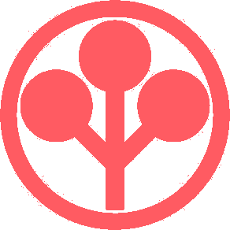

LOCAL CONSOLE // INITIALIZING
GHOST
/
NODE
接続を確立しています
NET // CHECKING
VIEW // —
WEATHER // MOSCOW

ARASAKA // GHOST NODE
ONLINE
VIEW
—
SEARCH LOCAL LINKS / WEB
root@ghost:~#
^K
検索
[01] DEVELOPMENT
4 LINKS
GitHub
GitLab
MDN
Django
01
[02] INFRASTRUCTURE
4 LINKS
Grafana
Portainer
Proxmox
Kubernetes
02
[03] INTELLIGENCE
4 LINKS
ChatGPT
Perplexity
Phind
Excalidraw
03
[04] MEDIA
5 LINKS
YouTube
SoundCloud
Reddit
Shikimori
JoyReactor
04
NO LINK FOUND // ENTER TO SEARCH NETWORK